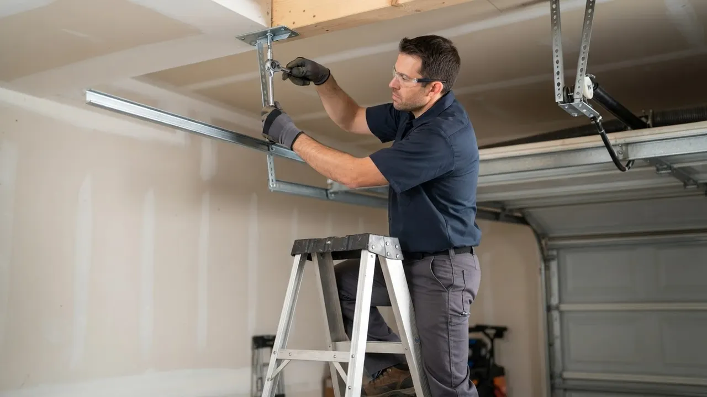

Garage Door Repair
Garage Door Repair in Wilmington done right the first time
Garage Door Repair in Wilmington means getting a door that opens, closes and locks the way it should, and we handle it from the first phone call. Delaware Express Garage Door Service has been fixing broken torsion springs, snapped cables, dead openers and off-track doors across New Castle County since 2010. We stock the parts, so most jobs finish in one visit.
Service overview
What Garage Door Repair in Wilmington actually involves
Garage Door Repair in Wilmington is the diagnosis and correction of whatever is keeping a door from running smoothly: a broken torsion spring, a snapped cable, worn nylon rollers, a bent track, a stripped gear in the opener, or a sensor knocked out of alignment. We test the door by hand first, then check the balance, the spring tension, the cable drums and the opener's travel limits. You get a straight answer on what failed and what it takes to fix it.
Most of the calls we run in Wilmington come from older homes with original hardware that has finally given out. A torsion spring is rated for roughly 10,000 cycles, and a door used four times a day hits that in about seven years. When a spring lets go at 6 a.m., the door will not budge, and that is when people start searching for a garage door repair company Wilmington homeowners can actually get out the same day.

Practical benefits
Why Wilmington homeowners call us first
A garage door is the largest moving object on your property, and it carries real weight under tension. Here is what you get when you call us instead of waiting it out.
Same-day repair slots
We hold openings every day for emergency calls, so a door stuck open on a cold night does not have to stay that way. Most Wilmington jobs are diagnosed and repaired within the same visit, and we carry torsion springs, cables and rollers on the truck.
Parts stocked on the truck
LiftMaster and Chamberlain openers, Genie and Linear units, Clopay and Amarr panels, plus standard torsion springs in the sizes that fit most Delaware doors. That means fewer return trips and one invoice instead of two.
Work guaranteed in writing
Every repair carries a workmanship warranty, and manufacturer warranties stay intact because we install the correct rated parts. If a spring we set fails early, we come back and make it right.
Honest pricing up front
You hear the price before we start, not after. Affordable garage door repair Wilmington DE homeowners can plan for means a clear number for the job, and we tell you when a repair is not worth it and replacement makes more sense.
How service works
How our repair process works
Five steps, no mystery. Here is exactly what happens from the moment you call until the door is running again.
STEP 01
Phone diagnosis
You describe what the door is doing, or not doing. We ask about noise, movement and whether the opener light blinks. That five-minute call usually tells us whether it is a spring, a cable or an opener problem, and it lets us load the right parts before we leave.
Tools and methods
Tools and methods we use
Winding bars
Used to wind and release torsion springs safely. A proper bar seats fully in the winding cone, which is why we never use a screwdriver or a piece of rod on a spring job.
C-clamps and vise grips
Lock the torsion tube and door in place while springs or cables are being replaced. They keep the door from dropping if something shifts mid-repair.
Socket wrench set and power drill
Used for hinge, bracket and track hardware. The drill speeds up panel and bracket work; the socket set lets us torque lag bolts properly instead of guessing.
Tape measure and level
Confirm track plumb and door square. A track that is out of plumb by a quarter inch will wear rollers and cables fast, so we check before we call a job done.
Rubber mallet and screwdriver set
Seat panels and hinges without denting steel, and adjust opener travel limits and sensor brackets. Small tools, but they prevent a lot of cosmetic damage.
Safety glasses and gloves
Spring and cable work throws debris. Eye protection is non-negotiable on every job, and it is one of the reasons our technicians finish the day without injuries.
UL 325 safety reverse testing
Every opener we touch gets tested against the UL 325 standard for automatic reversing. We check that the door reverses on contact and that the photo-eye sensors stop the door when the beam is broken. This is the test that keeps kids and pets safe.
ANSI/DASMA 102 door standards
We size springs, cables and hardware to the ANSI/DASMA 102 standard for the door's weight and cycle rating. That means the parts we install are rated for the job, not just close enough to fit.
Matched-pair spring replacement
Springs are replaced in pairs, never one at a time. Two springs share the load, so a new spring paired with an old one wears out fast. Matched pairs keep the door balanced and the opener under less strain.
Balance and force-limit calibration
After any repair we disconnect the opener and lift the door by hand to confirm balance, then reset the opener's force and travel limits. A door that is properly balanced needs very little motor effort to move.
Where this service fits
When to call for garage door repair
A spring snaps on a 20-degree January morning in Brandywine Village and the car is trapped inside.
We treat trapped-vehicle calls as priority dispatch. A technician arrives with the correct springs for your door weight, replaces them in matched pairs, and resets the opener limits. Most of these jobs are finished in about 90 minutes. You get the car out and the door running the same day, with new springs rated for years of cycles instead of months.
A door in Downtown Wilmington comes off track after someone backs into it in the alley.
We secure the door first so it cannot fall, then reset the rollers into the track, straighten or replace bent track sections, and re-balance the door. If a panel is cracked, we quote the replacement at the same visit. The door runs straight and quiet again, and you know exactly what a panel swap would cost if you want it later.
An opener in Trolley Square stops responding to remotes but still works from the wall button.
That pattern usually points to a logic board or antenna issue, or a remote that lost its code. We test the board, reprogram the remotes, and replace the board if it has failed. Keypads get checked at the same time. You get your remotes back and a door that opens from the driveway again, usually inside a single visit.
A commercial rolling door at a Riverfront warehouse jams during a morning delivery window.
We dispatch for commercial calls with the operator parts and high-cycle springs those doors use. The door gets secured, the failure diagnosed, and the repair done so the dock is not sitting idle. Your loading door is back in service the same day, with the cycle rating matched to the traffic it actually sees.
Local execution
How Garage Door Repair runs in Wilmington
Wilmington's housing stock is a mix of 1920s carriage houses, mid-century ranches and newer construction, and each one fails differently. Older wood doors in Wawaset Park and The Highlands often still run on extension springs that stretch and sag, while newer steel doors in Union Park Gardens and along the Riverfront use torsion systems that fail at the spring. Delaware's freeze-thaw cycle is hard on bottom seals and hinges, and the salt air coming off the Christina River corrodes steel rollers and cables faster than inland areas. We keep both extension and torsion parts on the truck, so a garage door fix Wilmington Delaware homeowners can schedule around a workday usually finishes in one visit. If you need same day garage door repair in Wilmington, Delaware, call before early afternoon and we can typically be there within a few hours.
Wawaset Park
Historic homes with original carriage-house doors. Many still run on extension springs, and we keep those parts on the truck because they are common here.
Trolley Square
Tight alleys and older detached garages mean track alignment matters more. A door that is even slightly out of plumb rubs the frame on the way up.
Riverfront
Newer construction plus commercial loading doors. Salt air off the river corrodes steel rollers and cables faster, so we check them on every visit.
Brandywine Village
A mix of rowhouses and small detached garages. Winter freeze-thaw is hard on bottom seals, and we replace a lot of them here in January and February.
Union Park Gardens
Mid-century homes with standard two-car openings. Most run torsion springs, and we stock the common sizes so a spring job is a one-visit repair.
Freeze-thaw cycles from December through March
Ice builds in the bottom seal and the track, and the door can freeze to the threshold. We check seals and hinges on winter calls and lubricate with cold-weather grease that does not stiffen.
Salt air near the Christina River
Steel rollers and galvanized cables corrode faster within a few blocks of the water. We recommend sealed nylon rollers and inspect cables more often on Riverfront and Southbridge properties.
Older homes with original door hardware
Original springs and drums are often past their cycle rating. We measure door weight before quoting so the replacement springs are rated correctly instead of guessed at.
Narrow alleys and tight driveways in the city
Tracks get bumped more often in tight spaces. We check track plumb and bracket tightness on every repair, because a quarter inch of misalignment wears rollers fast.
Problems we solve
Garage door problems we fix every week
Most Wilmington door failures fall into a handful of categories. Here is what we see most often and what it takes to fix each one.
Broken torsion spring leaves the door dead
We replace both torsion springs with matched pairs rated for your door's weight, wind them with proper bars, and reset the opener's force limits. Most spring jobs are done in about an hour, and we check the cables and drums while the door is apart. The opener cannot lift a door with a broken spring, and forcing it strips the gear or burns out the motor. The door is also unsafe to leave hanging under tension.
Snapped cable drops the door on one side
We replace both cables at once, inspect the drums for wear, and re-level the door so it lifts evenly. If the cable snapped because a drum was grooved, we replace the drum too so the new cable lasts. A door hanging crooked on one cable can jump the track and fall. It also puts uneven load on the springs and the opener, which shortens the life of both.
Opener hums but the door will not move
We open the gear case, replace the stripped gear and sprocket, clean out the old grease, and re-lubricate with the right compound. If the motor itself is failing, we quote a replacement and match the horsepower to your door weight. A stripped gear or failed capacitor means the motor runs but nothing turns. People often keep pressing the button, which wears the gear further and can damage the logic board.
Door reverses or stops halfway down
We realign the sensor lenses, clean the contacts, and replace failed sensors. Then we run the reverse test under UL 325 to confirm the door stops and reverses the way it should. Misaligned or dirty safety sensors are the usual cause. A door that will not close leaves the house open to weather and to anyone walking by.


A practical standard for every visit.
Clear planningPrepared arrivalsCareful workLocal follow-through
Experience in the details
Sixteen years of doors in New Castle County
Delaware Express Garage Door Service has been repairing and installing garage doors since 2010, which puts us at 16 years serving Wilmington and the surrounding New Castle County area. Our technicians work on residential and commercial doors daily, from single-car carriage doors in Trolley Square to high-cycle rolling steel doors on Riverfront loading docks. We follow UL 325 safety requirements on every opener we touch, keep up with ANSI/DASMA 102 standards for door construction, and hold a Delaware contractor license. That means the work is done to code, not just to whatever gets the door moving again.

Where we work
One local team. A lot of ground covered.
Downtown WilmingtonRiverfrontThe HighlandsTrolley SquareForty AcresBaynard VillageWawaset ParkCool SpringTrinity VicinityBrowntownLittle ItalyUnion Park Gardens
Check my address Notes from local customers
What Wilmington customers say
Our torsion spring snapped on a Sunday morning and the door would not move at all. Called at 8, had a tech at the house by 11. He showed me the broken spring, quoted the price, and had it replaced in under an hour. Door runs quieter than it has in years. Fair price and no upsell.
The door kept reversing halfway down and I could not figure out why. Turned out the safety sensors were misaligned after a fender bender in the driveway. They realigned them, tested the reverse, and also swapped two worn rollers while they were there. Done in 45 minutes.
We manage a small commercial building and one of the loading doors went off track on a Friday. They came out the same afternoon, got it back on the track, and replaced a bent section. Kept the tenants informed the whole time. We use them for all our door work now.
Most repairs run $180 to $450, with a single torsion spring replacement landing around $250 to $350 installed. Opener motor failures and off-track repairs sit at the higher end because they take longer and use more parts. Panel replacement and full cable and drum jobs can reach $600 or more. We give you the number before we start, so there are no surprises on the invoice.
Yes. We hold same-day slots every day for Wilmington and the surrounding ZIP codes, including 19801, 19802 and 19806. Call before early afternoon and we can usually have a technician at your door within a few hours. If the door is stuck open or a car is trapped inside, tell us on the phone and we will prioritize it.
The best repair is the one that fixes the actual failure instead of the symptom. That means testing door balance, checking spring cycle life, and inspecting cables and rollers before quoting. We have been doing that in Wilmington since 2010, we carry the parts on the truck, and every job carries a workmanship warranty. Ask us what failed and we will show you.
We take emergency calls around the clock, seven days a week, for doors that are stuck open, off track, or holding a vehicle hostage. Call (302) 556-5080 any time and you reach a live person, not a voicemail box. Overnight and holiday calls get dispatched as soon as a technician is free, usually within a couple of hours.
Keep exploring
Other garage door work we handle
Your next step is waiting
Need Garage Door Repair in Wilmington today?
Call (302) 556-5080 and talk to a real person who can dispatch a technician. We are licensed, insured and have been fixing doors in Wilmington since 2010. Same-day and emergency slots are open now across New Castle County.
Start with the basics
Call For Garage Door Service
Call (302) 556-5080 and tell us what your door is doing. We answer during business hours and run emergency calls after hours. Most days we can get a tech to you the same day, and we will give you a window, not a maybe.